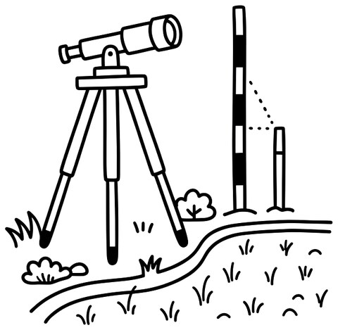
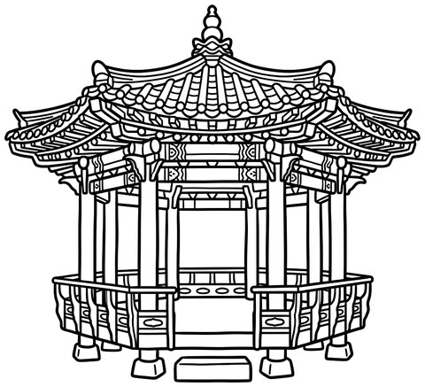
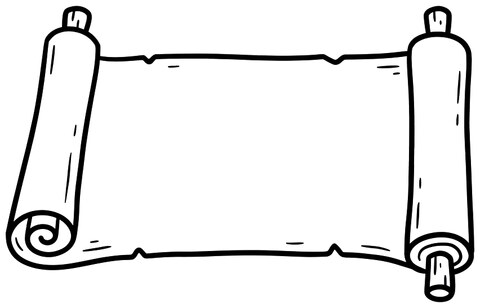

🌸
3단원. 일제의 침략과 광복을 위한 노력
1. 나라를 빼앗기고, 만세를 부르다
5학년 반
01. 일제가 국권을 빼앗은 과정과 3·1 운동을 알아보기
핵심단어: ㅇㅅㄴㅇ · ㄱㄱㅍㅌ · ㅁㄷㅌㅊ · ㅌㅈㅈㅅ · ㅁㅅㅇㄷ · ㄷㄹㅅㅇㅅ
암호 연표 — 깃발을 색칠하며 순서를 익혀요
방탈출 자물쇠 5개가 바로 이 다섯 해예요.
① 을사늑약
1905년, 일제가 대한 제국의
외교권을 강제로 빼앗았어요.
② 국권 피탈
1910년, 나라의 주권까지
완전히 빼앗겼어요.
③ 무단 통치
헌병 경찰이 칼을 차고 다니며
우리 민족을 억눌렀어요.
④ 토지 조사 사업

정해진 날까지 신고하게 해
많은 농민이 땅을 잃었어요.
⑤ 3·1 운동
1919년 3월 1일,
전국에 만세 소리가 퍼졌어요.
⑥ 탑골 공원

서울 탑골 공원에서
만세 운동이 시작되었어요.
⑦ 독립 선언서

민족 대표들이 독립 선언서를
발표했어요.
⑧ 유관순
유관순은 천안 아우내 장터에서
태극기를 들고 만세를 외쳤어요.
한 문장 정리일제는 1905년 외교권을, 1910년에는 주권까지 빼앗았지만, 우리 민족은 3·1 운동으로 온 나라에서 독립을 외쳤다.
생각해 보기총도 무기도 없이 손에 태극기만 들었던 사람들은, 무엇을 믿고 거리로 나섰을까요?
🌸
3단원. 일제의 침략과 광복을 위한 노력
2. 독립을 위한 노력과 광복
5학년 반
02. 나라 안팎에서 이어진 독립운동과 광복의 의미를 알아보기
핵심단어: ㅇㅅㅈㅂ · ㅂㅇㄷ · ㅊㅅㄹ · ㅊㅆㄱㅁ · ㅈㅅㅇㅎㅎ · ㄱㅂ
① 대한민국 임시 정부
1919년, 중국 상하이에 대한민국
임시 정부가 세워져 나라 밖에서
독립운동을 이끌었어요.
② 무장 독립 투쟁
1920년 만주 봉오동과 청산리에서
독립군이 일본군을 크게 물리쳤어요.
③ 민족 말살 통치
일제는 우리 이름을 일본식으로 바꾸게 하고
신사에 절하도록 강요했어요. (창씨개명)
④ 8·15 광복
1945년 8월 15일, 마침내 광복을 맞이했어요.
수많은 사람의 노력이 만든 날이에요.
빼앗긴 것들
쌀과 자원을 수탈해 갔고,
사람들까지 전쟁터와 공장으로 끌려갔어요.
지켜 낸 것들
우리말 사용을 막았지만 조선어 학회는
몰래 우리말 사전을 만들며 지켜 냈어요.
독립운동은 나라 밖에서도 이어졌어요
방탈출 암호로 복습!
1905 = 을사늑약
1910 = 국권 피탈
0301 = 3·1 운동
1920 = 봉오동·청산리
0815 = 광복
다섯 자물쇠를 순서대로 이으면
어떤 이야기가 되나요?
한 문장 정리일제는 우리의 땅과 말과 이름까지 빼앗으려 했지만, 나라 안팎에서 이어진 독립운동 끝에 1945년 8월 15일 광복을 맞이했다.
오늘의 다짐광복은 저절로 온 것이 아니에요. 내가 기억하고 싶은 사람이나 장면 하나를 골라, 그 까닭을 짝에게 이야기해 보세요.
※ 오늘 배운 낱말 중 가장 마음에 남는 것에 동그라미를 치고, 왜 그런지 한 줄로 적어 보세요.